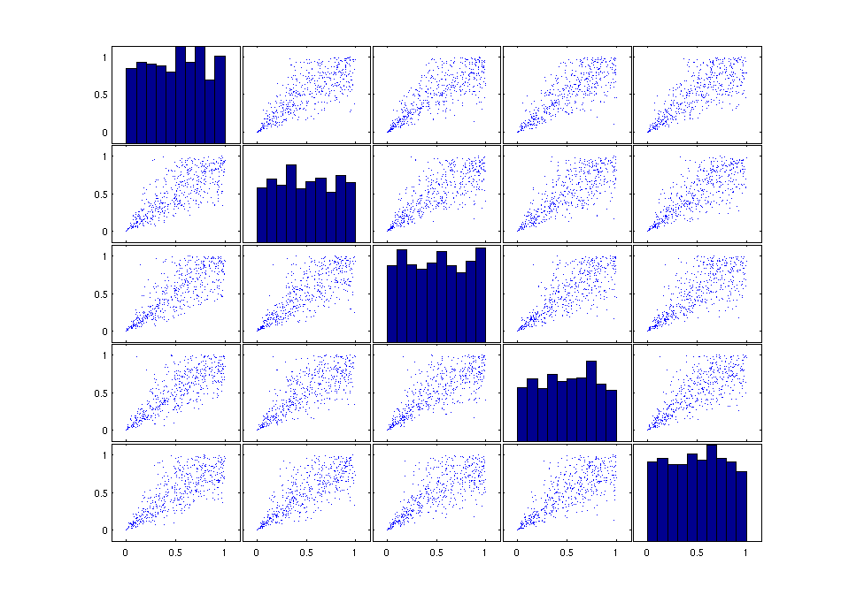

Demo of the VineCPP toolbox
This demo should illustrate how the VineCPP toolbox can be used to work with vine copulas. This demo starts with the simulation of data from vine copula models. The focus in this part is on the simulation from vine copulas, where some of the conditional copulas are copulas for which the parameter is a function of the conditioning variable. The second part shows how one can use the functions of the VineCPP toolbox to select simplified vine copula models. Estimation is illustrated in the third part of this demo. The fourth part of the demo shows how one can use the toolbox to test for simplified vine copulas. It is shown how the simplifying assumption can be tested with a sequential approach, based on a statistical tests on vectorial independencies.
Simulating possibly non-simplified vine copulas
In the following three different data generating processes will be used to present the functioning of the toolbox. The first example is the five-dimensional Clayton copula. From this copula, one can simulate in two different ways, either by using the Laplace transform to simulate directly from the five-dimensional Archimedean copula or by simulating from the corresponding C-Vine representation (like it will be done in the following).
% Choose the number of dimensions for the C-Vine. dimension = 5; % Specify the pair-copula families. families = ones(1,dimension*(dimension-1)/2).*7; % Select the structure of the C-Vine (i.e., the order of the nodes). structure = 1:dimension; % Define all copulas being bart of the C-Vine as pair-copulas (i.e., % unconditional bivariate copulas) simplified = ones(1,(dimension-1)*(dimension-2)/2); % Specify the vine copula type (yet only C-Vine and D-Vine are implemented) type = 'C-Vine'; % Give the parameters for all unconditional and partial copulas being % building blocks of the C-Vine copula. theta = 3; parameters = repmat(theta,1,dimension-1); for i=2:dimension-1 parameters = [parameters , repmat(theta/((i-1)*theta+1),1,dimension-i)]; end parameters; % Use all the pre-defined properties to construct an object of the % VineCopula class VineCopulaObject1 = VineCopula(dimension,type,simplified,structure,families,parameters) U = Sim(VineCopulaObject1,500); figure('Units','normalized','Position',[0.2 0.2 0.6 0.8],'PaperPositionMode','auto'); plotmatrix(U)
VineCopulaObject1 =
VineCopula
Vine copula properties:
Type: 'C-Vine'
Dimension: 5
Structure: [1 2 3 4 5]
simplified: [1 1 1 1 1 1]
MaxLLs: []
Building blocks tree by tree:
1. Tree
Pair_Copula: 'C_1,2: Clayton copula (theta = 3)'
Pair_Copula: 'C_1,3: Clayton copula (theta = 3)'
Pair_Copula: 'C_1,4: Clayton copula (theta = 3)'
Pair_Copula: 'C_1,5: Clayton copula (theta = 3)'
2. Tree
Pair_Copula: 'C_2,3;1: Clayton copula (theta = 0.75)'
Pair_Copula: 'C_2,4;1: Clayton copula (theta = 0.75)'
Pair_Copula: 'C_2,5;1: Clayton copula (theta = 0.75)'
3. Tree
Pair_Copula: 'C_3,4;1,2: Clayton copula (theta = 0.4286)'
Pair_Copula: 'C_3,5;1,2: Clayton copula (theta = 0.4286)'
4. Tree
Pair_Copula: 'C_4,5;1,2,3: Clayton copula (theta = 0.3)'

The second example is the same vine copula (the C-Vine representation of the five-dimensional Clayton copula), where the last partial copula (i.e., the copula C_45|123 is substituted by a Frank copula with functional parameter theta(x_1) = (4x_1-2)^3. The described C-Vine is constructed as a member of the VineCopula class, which forms the central class of the whole toolbox.
% Choose the number of dimensions for the C-Vine. dimension = 5; % Specify the pair-copula families families(end) = 9; % Select the structure of the C-Vine (i.e., the order of the nodes). structure = 1:dimension; % The last copula is a conditional copula simplified(end) = 0; % Specify the vine copula type (yet only C-Vine and D-Vine are implemented) type = 'C-Vine'; % Give the parameters for all pair-copulas copulas being % building blocks of the C-Vine copula. parameters(end) = []; % Define the functional parameter as a cell of function-handles. ParamFunctional = {@(x) (4*x(:,1)-2).^3}; % Use all the pre-defined properties to construct an object of the % VineCopula class VineCopulaObject2 = VineCopula(dimension,type,simplified,structure,families,parameters,ParamFunctional)
VineCopulaObject2 =
VineCopula
Vine copula properties:
Type: 'C-Vine'
Dimension: 5
Structure: [1 2 3 4 5]
simplified: [1 1 1 1 1 0]
MaxLLs: []
Building blocks tree by tree:
1. Tree
Pair_Copula: 'C_1,2: Clayton copula (theta = 3)'
Pair_Copula: 'C_1,3: Clayton copula (theta = 3)'
Pair_Copula: 'C_1,4: Clayton copula (theta = 3)'
Pair_Copula: 'C_1,5: Clayton copula (theta = 3)'
2. Tree
Pair_Copula: 'C_2,3;1: Clayton copula (theta = 0.75)'
Pair_Copula: 'C_2,4;1: Clayton copula (theta = 0.75)'
Pair_Copula: 'C_2,5;1: Clayton copula (theta = 0.75)'
3. Tree
Pair_Copula: 'C_3,4;1,2: Clayton copula (theta = 0.4286)'
Pair_Copula: 'C_3,5;1,2: Clayton copula (theta = 0.4286)'
4. Tree
Cond_Copula: 'C_4,5|1,2,3: Frank copula (@(x)(4*x(:,1)-2).^3)'
Having defined the object of the VineCopula class, one can simulate from it by using the method Sim.
% Use the method Sim for objects from the VineCopula class, to simulate % from the specified non-simplified C-Vine copula. V = Sim(VineCopulaObject2,500); figure('Units','normalized','Position',[0.2 0.2 0.6 0.8],'PaperPositionMode','auto'); plotmatrix(V)

The third example is an arbitrary combination of partial copulas and conditional copulas with functional parameter as building block of a five-dimensional non-simplified C-Vine copula.
% Construct the object of the VineCopula class and apply the method Sim to % it. VineCopulaObject3 = VineCopula(5,'C-Vine',... [0,0,1,1,1,1],... [1 2 3 4 5],... {'Clayton','Gumbel','t','Indep','Frank','BB1','Gaussian','Indep','Tawn','Indep'; [],[],[],[],[],'r90',[],[],'r270',[]},... [1.2, 3,-0.9,1.6,0.7,5,0.1,0.9],... {@(u) (4.*u-2).^3, @(u) (u+1), @(u) (u+1)})W = Sim(VineCopulaObject3,500); figure('Units','normalized','Position',[0.2 0.2 0.6 0.8],'PaperPositionMode','auto'); plotmatrix(W)
VineCopulaObject3 =VineCopula
Vine copula properties: Type: 'C-Vine' Dimension: 5 Structure: [1 2 3 4 5] simplified: [0 0 1 1 1 1] MaxLLs: []
Building blocks tree by tree:
Tree Pair_Copula: 'C_1,2: Clayton copula (theta = 1.2)'
Pair_Copula: 'C_1,3: Gumbel copula (theta = 3)'
Pair_Copula: 'C_1,4: t copula (theta = (-0.9,1.6))'
Pair_Copula: 'C_1,5: Indep copula'
Tree Cond_Copula: 'C_2,3|1: Frank copula (@(u)(4.*u-2).^3)'
Cond_Copula: 'C_2,4|1: BB1 copula (90°, @(u)(u+1) and @(u)(u+1))'
Pair_Copula: 'C_2,5;1: Gaussian copula (theta = 0.7)'
Tree Pair_Copula: 'C_3,4;1,2: Indep copula'
Pair_Copula: 'C_3,5;1,2: Tawn copula (270°, theta = (5,0.1,0.9))'
Tree Pair_Copula: 'C_4,5;1,2,3: Indep copula'

Selecting simplified vine copula models
In a next step, the method StructureSelect for objects from the class VineCopula should be used for selecting simplified vine copulas, which are then used as an approximation to the overall distributions. The nodes of the C-vine are chosen in a way that in each tree, the root (i.e. the node, which is connected by a copula to all other nodes) is the variable which has maximal dependence with all other variables. The maximal dependence is found by choosing the variable which has the maximal column sum in the matrix of absolute empirical Kendall’s τ (cf. Schepsmeier, Stöber, and Brechmann (2013) for an R-function (RVineStructureSelect) of exactly the same procedure and Czado, Schepsmeier, and Min (2012, p. 240) for the theoretical background of the approach). Furthermore, the copula families are chosen according to the AIC criterion and for each pair- copula an independence test is performed (cf. Schepsmeier, Stöber, and Brechmann (2013) and Brechmann and Schepsmeier (2013) for R-functions (RVineStructureSelect / RVineCopSelect / CDVineCopSelect) and Genest and Favre (2007, p. 351) for the independence test).
VineCopulaSel3 = StructureSelect(VineCopula(5,'C-Vine',1),W);
For the first and second example, the structure is selected manually. For the second example with the Frank copula with varying parameter an Independence copula is selected as partial copula to obtain a approximation of the overall distribution, which is a simplified C-Vine copula.
VineCopulaSel1 = VineCopula(5,'C-Vine',... true,... [1 2 3 4 5],... repmat({'Clayton'},1,5*(5-1)/2)); VineCopulaSel2 = VineCopula(5,'C-Vine',... true,... [1 2 3 4 5],... [repmat({'Clayton'},1,5*(5-1)/2-1) {'Indep'}]);
Estimating simplified vine copula models
The next part of this demo demonstrates how the Fit method of the VineCopula class can be used to estimate simplified C-Vine copulas. In the following we want to estimate the selected models from the last section to the simulated data. As estimation method one can choose between a joint estimation and a sequential estimation approach. In the case of a joint estimation, the sequential approach is applied first to obtain starting values for the numerically optimization of the joint / overall log-likelihood. The default method is the joint estimation.
VineCopulaHat1 = Fit(VineCopulaSel1,U); VineCopulaHat2 = Fit(VineCopulaSel2,V); VineCopulaHat3 = Fit(VineCopulaSel3,W);
Testing the simplified assumption for vine copulas
Now the simplified assumption should be tested in a sequential manner. Note that the different tests, used in the following are not tests on the simplifying assumption in general but every conditional copula being part of the C-Vine is tested against a partial copula. This can be seen as a sequential testing procedure on the simplifying assumption as the simplifying assumtion is equivalent to the assumption that every conditional copula of a pair-copula construction (PCC) is a partial copula. For the interpretation of the test results, one has to keep in mind that everytime a test on the partial copula is performed, the assumption that one is able to obtain observations from the conditional copula that should be tested is needed. This assumption includes that the pair-copulas (including the assumption of having partial copulas) in the lower trees of the vine copula are correctly specified.
% Apply the tests to the data examples.
[pVals1,TestStats1] = SeqTestOnSimplified(VineCopulaHat1,U)
pVals1 =
0.5750
0.2100
0.0610
0.3970
0.1650
0.0100
TestStats1 =
0.0206
0.0325
0.0458
0.0252
0.0325
0.0528
[pVals2,TestStats2] = SeqTestOnSimplified(VineCopulaHat2,V)
pVals2 =
0.9680
0.8340
0.5640
0.2480
0.5440
0.1460
TestStats2 =
0.0124
0.0155
0.0212
0.0293
0.0209
0.0286
[pVals3,TestStats3] = SeqTestOnSimplified(VineCopulaHat3,W)
pVals3 =
0.0520
0.0070
0
0.0410
0.3390
0.1640
TestStats3 =
0.0353
0.0473
0.1153
0.0246
0.0132
0.0094
References
[1] Brechmann, E. C. and U. Schepsmeier (2013), "Modeling Dependence with C- and D-Vine Copulas: The R-Package CDVine", Journal of Statistical Software 52(3), R package version 1.1-13, pp. 1-27, url: http://CRAN.R-project.org/package=CDVine.
[2] Czado, C., U. Schepsmeier, and A. Min (2012), "Maximum likelihood estimation of mixed C-vines with application to exchange rates", Statistical Modelling 12(3), pp. 229-255.
[3] Genest, C. and A. Favre (2007), "Everything You Always Wanted to Know about Copula Modeling but Were Afraid to Ask", Journal of Hydrologic Engineering 12(4), pp. 347-368.
[4] Schepsmeier, U., J. Stöber, and E. C. Brechmann (2013), VineCopula: Statistical inference of vine copulas, R package version 1.2, url: http://CRAN.R-project.org/package=VineCopula.
Author: Malte Kurz